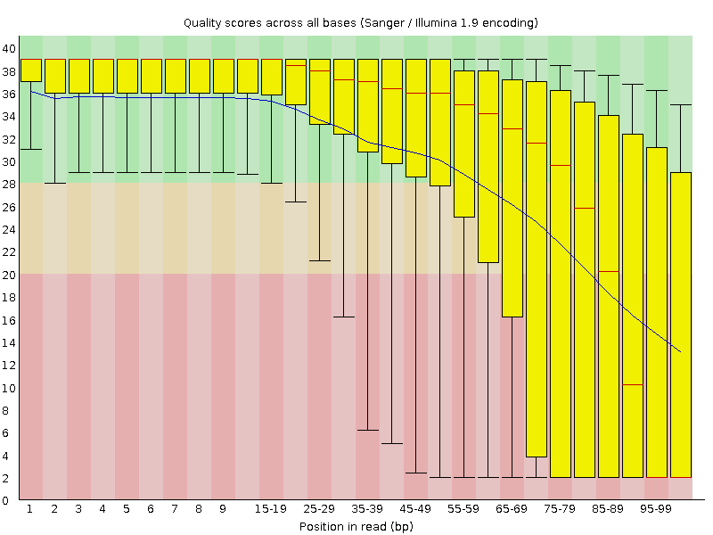
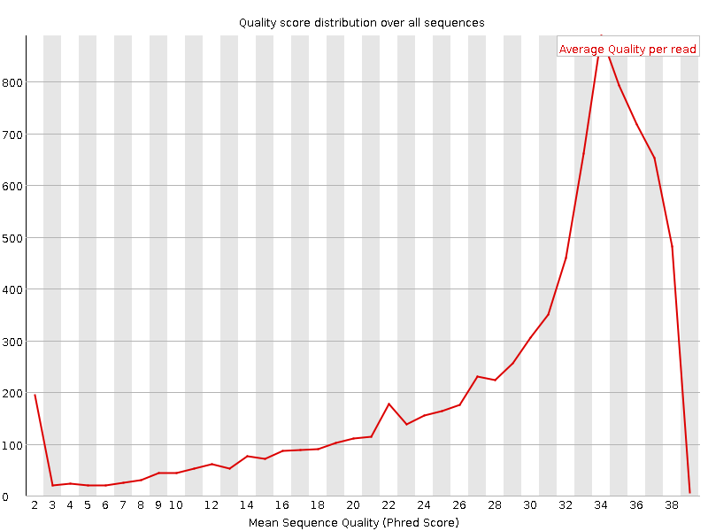
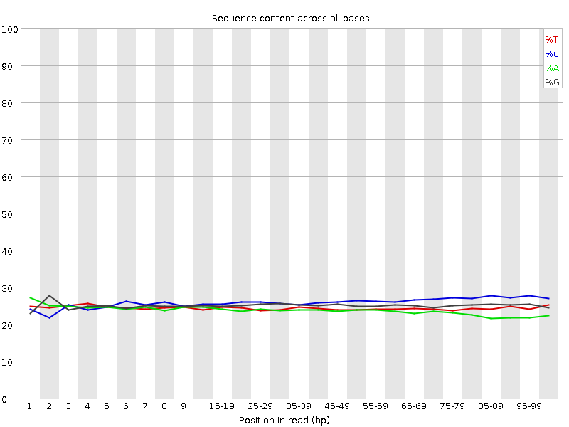
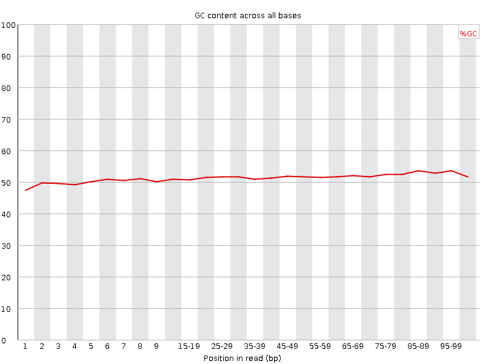
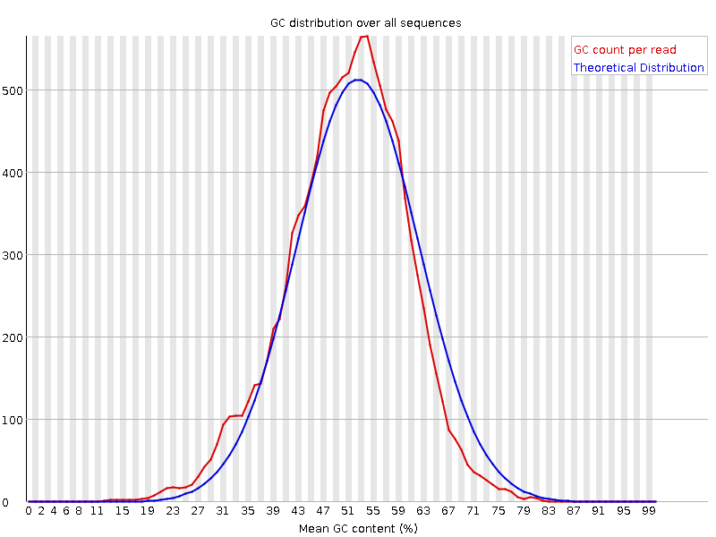
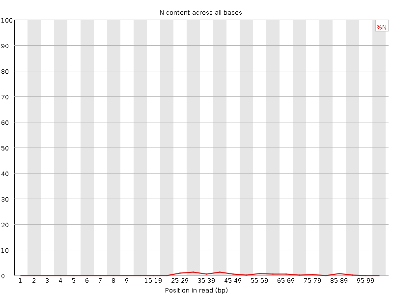
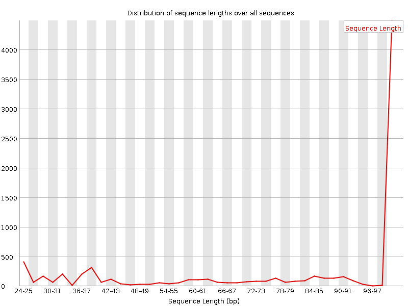
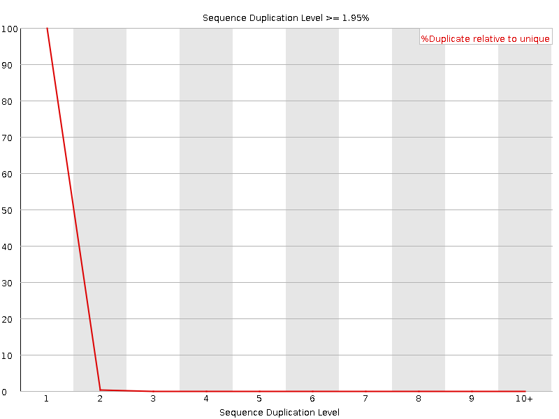
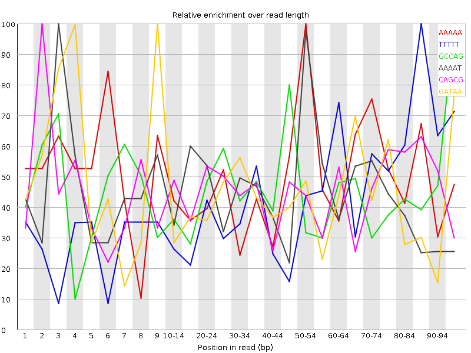

![[OK]](Icons/tick.png) Basic Statistics
Basic Statistics
| Measure | Value |
|---|---|
| Filename | ECOLI_orphans.qc.fq.gz |
| File type | Conventional base calls |
| Encoding | Sanger / Illumina 1.9 |
| Total Sequences | 8204 |
| Filtered Sequences | 0 |
| Sequence length | 25-100 |
| %GC | 51 |
![[FAIL]](Icons/error.png) Per base sequence quality
Per base sequence quality

Per sequence quality scores

Per base sequence content

Per base GC content

Per sequence GC content

Per base N content

![[WARN]](Icons/warning.png) Sequence Length Distribution
Sequence Length Distribution

Sequence Duplication Levels

Overrepresented sequences
| Sequence | Count | Percentage | Possible Source |
|---|---|---|---|
| TGGGCCCGGGAGGAGTTTGCCGGGGAGGAGTGGGTTTGGAATCGGGGTTAAAGGAAAGAGA | 41 | 0.499756216479766 | No Hit |
| GTCAATATAACCAGTAGTGTTAACAGTCGGGAGAGGAGTGGCATTAACACCATCCTTCATGAACTTAATCCACTG | 26 | 0.31691857630424186 | No Hit |
Kmer Content

| Sequence | Count | Obs/Exp Overall | Obs/Exp Max | Max Obs/Exp Position |
|---|---|---|---|---|
| AAAAA | 1735 | 3.8172677 | 7.822392 | 50-54 |
| TTTTT | 1780 | 3.218094 | 7.7036276 | 85-89 |
| GCCAG | 1655 | 2.5423253 | 5.7168145 | 95-96 |
| AAAAT | 1195 | 2.5279367 | 5.5576572 | 3 |
| CAGCG | 1535 | 2.3579874 | 5.185682 | 2 |
| GATAA | 1135 | 2.2394066 | 5.1962867 | 9 |
| TTATC | 1260 | 2.2075484 | 5.2540574 | 4 |
| ATAAA | 1025 | 2.1683137 | 5.5508757 | 4 |
| TTTAT | 1085 | 2.040156 | 6.351431 | 3 |
| TGATG | 1145 | 2.0259395 | 5.9913054 | 9 |
| TAAAA | 880 | 1.8615768 | 5.5542645 | 1 |
| TGCGC | 1200 | 1.772391 | 5.550149 | 7 |
| GGCGA | 1065 | 1.7032187 | 5.4046936 | 95-96 |
| ATGAA | 805 | 1.5883017 | 5.9241023 | 6 |
| AACCA | 895 | 1.5804421 | 5.9793777 | 9 |
| AATAT | 760 | 1.5458132 | 8.386896 | 4 |
| TGATT | 845 | 1.5412887 | 6.157438 | 2 |
| CGCAA | 930 | 1.5317125 | 5.5599008 | 1 |
| ATAAC | 735 | 1.392954 | 6.4094143 | 7 |
| GAAGA | 720 | 1.3780446 | 5.0252657 | 1 |
| AATGA | 695 | 1.3712666 | 5.1804247 | 5 |
| CAATA | 695 | 1.317147 | 6.4015837 | 3 |
| TAACC | 775 | 1.3158377 | 5.1071987 | 8 |
| GCCCG | 910 | 1.2523502 | 7.7382154 | 4 |
| TCAAT | 620 | 1.1297601 | 6.1513057 | 2 |
| ATTTG | 610 | 1.1126465 | 6.1642127 | 95-96 |
| CCGGG | 755 | 1.08173 | 8.066009 | 6 |
| CCCGG | 760 | 1.0459187 | 6.710547 | 5 |
| TGGGC | 665 | 1.022557 | 7.4978976 | 1 |
| TATAA | 450 | 0.9152841 | 5.343636 | 6 |
| CGGGA | 555 | 0.8875929 | 7.81251 | 7 |
| GGAGG | 490 | 0.815839 | 8.143474 | 9 |
| GTCAA | 435 | 0.7689135 | 5.3040605 | 1 |
| GGGAG | 445 | 0.74091506 | 8.138491 | 8 |
| ATATA | 330 | 0.6712083 | 5.3403745 | 5 |
| GGCCC | 380 | 0.52295935 | 7.2311573 | 3 |
| GGGCC | 350 | 0.50146425 | 6.986273 | 2 |